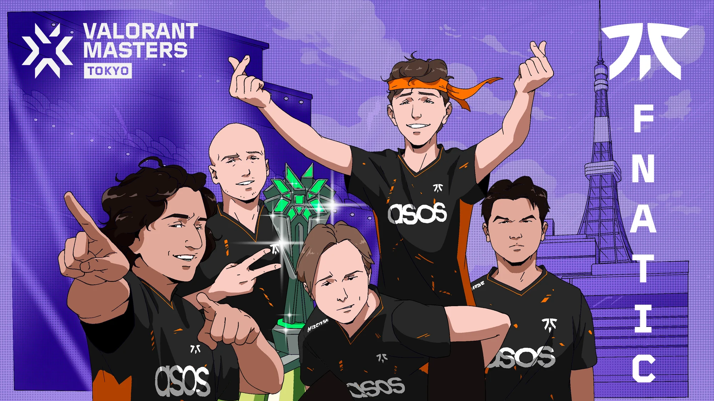
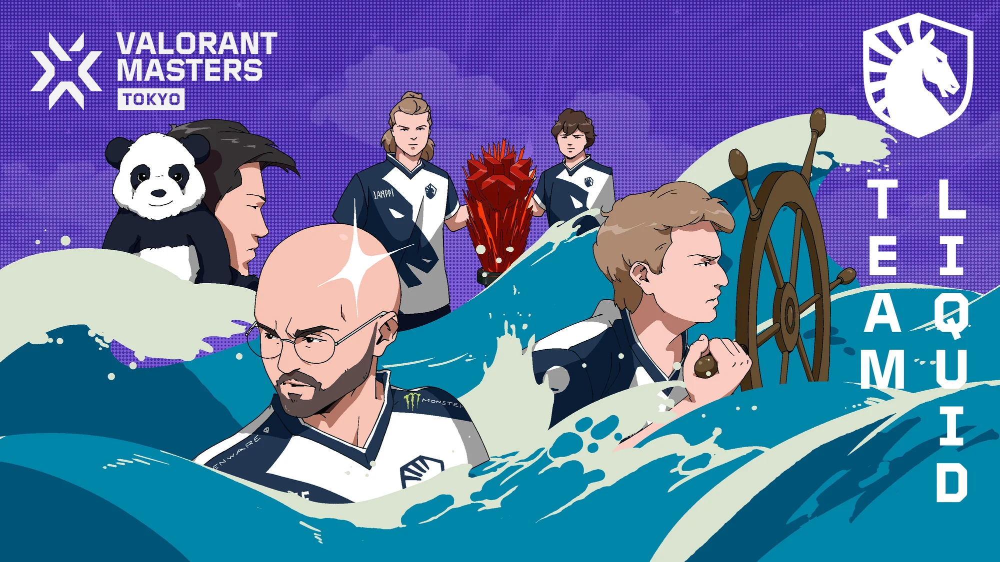
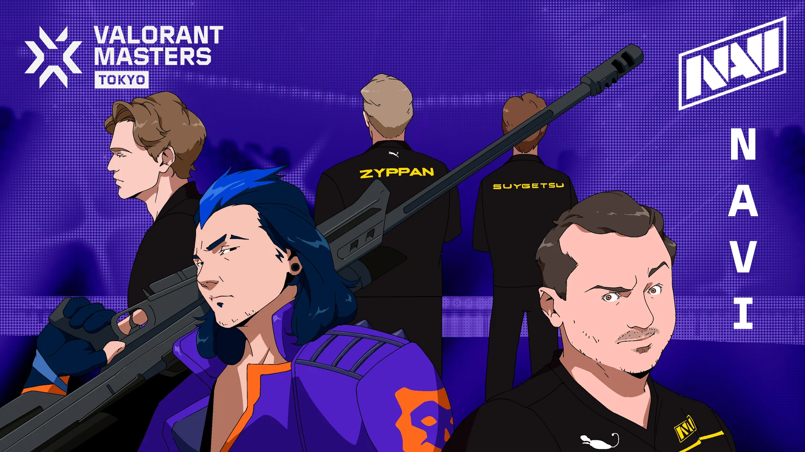
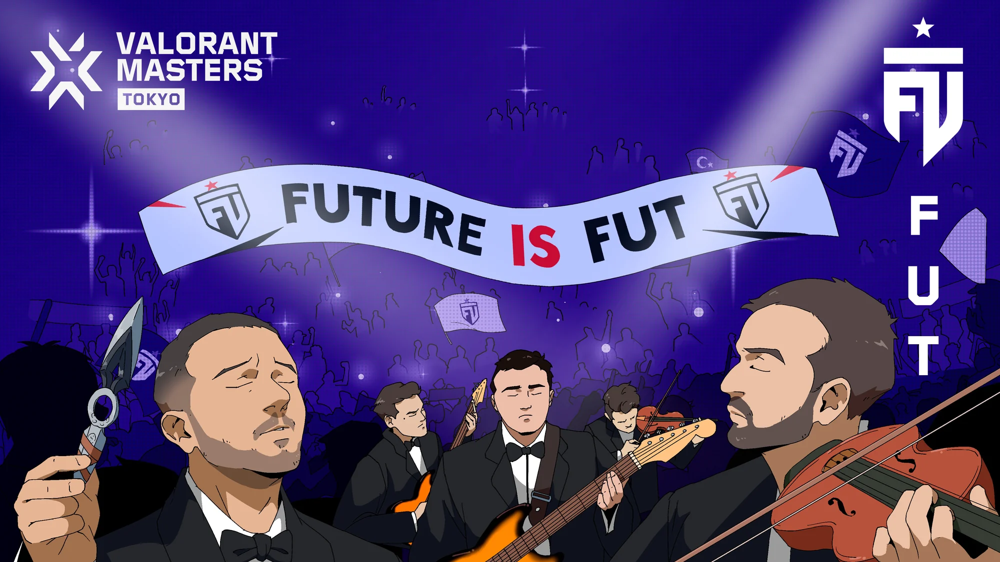
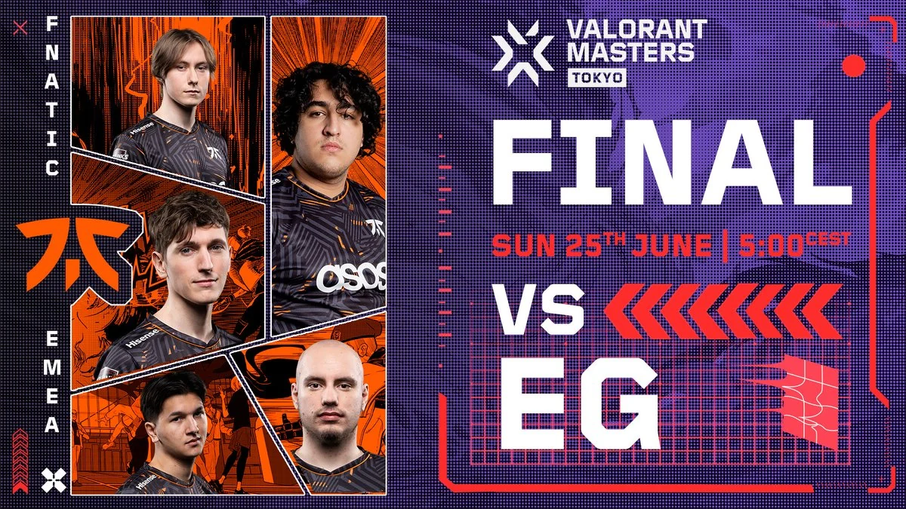
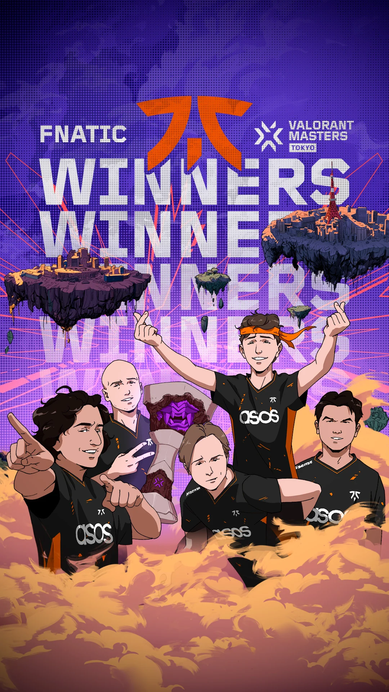

Overview
EMEA’s social campaigns for two VALORANT Masters events: Tokyo in 2023, which I led in-house at Riot Games and is the campaign I’m proudest of, and Madrid in 2024, where I set the creative direction at Edelman.
Highlights
1M
Impressions across static assets
Masters Tokyo
200K+
Views across video
Masters Tokyo
10K+
Engagements
Masters Tokyo
The challenge
International events compete with everything else in the esports calendar. Each Masters had to feel unmissable to EMEA’s fans, and give the host city a real role in the story rather than a backdrop for logos and dates.
My role
I led EMEA’s social campaign for Masters Tokyo in-house at Riot Games in 2023, and set the creative direction for the Masters Madrid hype film at Edelman in 2024.
Strategic approach
Start from the host city:
- Make the city a characterTokyo’s visual culture and Madrid’s streets carry the story, not the event branding alone.
- Work with the people who know itFor Tokyo, Riot Games’ Tokyo office shaped how the campaign spoke to Japanese fans.
- Give fans something to keepAssets that outlive match day, like wallpapers of every team.
- Stay on through the finalCoverage that keeps the campaign going until the trophy is lifted.
Masters Tokyo, 2023
The first VALORANT Masters held in Japan, and the campaign I’m proudest of from my time on VALORANT Esports.
In-house at Riot Games
Drawn for Tokyo, written for its fans
EMEA’s four teams, Fnatic, Team Liquid, NAVI and FUT Esports, drawn as bespoke anime-style illustrations: a visual language that belongs to the host city, carried through the event in several forms, from the Road to Masters film and team artwork to wallpapers and match-day coverage.
Written for Japanese fans
We worked with Riot Games’ Tokyo office so the campaign would land with Japanese audiences. Together we compiled the phrases and slang the Japanese VALORANT community uses, each one approved by the Tokyo office, and that language ran through all of our social copy during event coverage.
Something to keep
Desktop and mobile wallpapers of each team carried the event beyond match days, and when Fnatic took the title, a winners’ wallpaper marked it.
My role
I led EMEA’s social campaign: the illustrated team assets, the localisation work with Riot Games’ Tokyo office, and coverage across the event, from the Road to Masters film through to the winners’ wallpaper for Fnatic.
1M
Impressions across static assets
200K+
Views across video
10K+
Engagements
Engagement and positive sentiment from Japanese fans rose sharply across X, YouTube community posts and Instagram. The campaign served the local community and the global one at the same time.






Masters Madrid, 2024
The first international event of the 2024 season, arriving in a new host city.
At Edelman
Hello, Madrid
A journey into the host city that lands on the Masters Madrid reveal, announcing that VALORANT’s international stage has arrived. Madrid itself became a character, connecting the EMEA league to the international stage so fans felt the jump in stakes, with the film cut and sequenced for each platform in the run-up to the event.
My role
Creative direction: setting the creative vision, briefing and guiding the production team, reviewing cuts against the brief and making sure the finished film was built to perform on social.
125K+
Views
3K+
Engagements